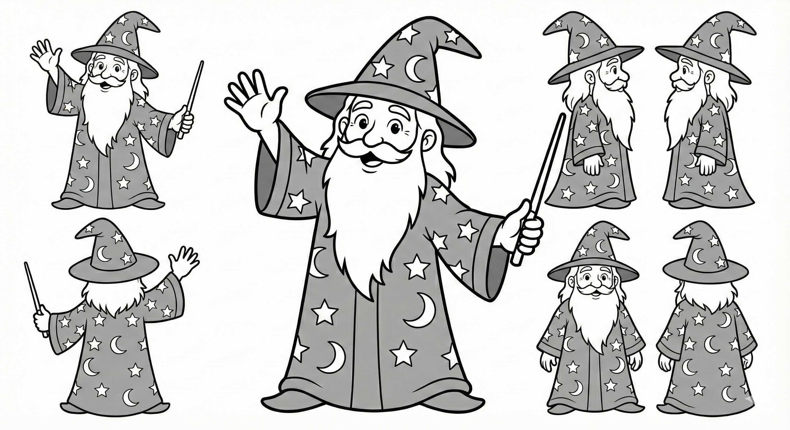

generating consistent linguistic experiment materials with AI

A Note on AI Generated Images: While this post details a technical solution for generating stimuli using AI, I firmly believe that human artistry is irreplaceable. I am not sure how ethical it is to use these pictures. I would much rather have a human artist draw these materials. If you are an artist interested in collaborating on linguistic experiments, please email me. I would be more than happy to drop this AI pipeline and work with you instead.
Introduction
If you’ve ever tried to create experimental stimuli for a linguistic study, you know the struggle. You need depictions of transitive actions that are valid, recognizable, but also controlled. You want your “Wizard” to look like the same Wizard whether he’s eating an apple or throwing a frisbee.
Finding consistent pictures for picture word interference tasks—or even simple production tasks that involve lexical verbs—is notoriously difficult. Most existing resources and production experiments focus heavily on nominals (nouns). Finding relevant images on the web is also very difficult. And whenever, you want to use stock images, you worry about a lot of different stuff going on in each image. Many acquisition labs actually record their students do the actions for other type of experiments.
I recently needed 60 distinct, stylistically consistent line drawings for a morphology experiment. I didn’t want to spend weeks drawing or learning how to draw them, and I didn’t want to wrestle with inconsistencies from standard web-based image generators or image searching. Existing databases did not provide a good quality verb sentences.
So, I built a code-first pipeline using Google’s Gemini 2.5 Flash Image and open-source alternatives like FLUX.1 via Hugging Face.
Here is how I did it.
The Problem: Consistency vs. Chaos
The main issue with generative AI for experiments is consistency. If I ask for “A wizard eating an apple” and then “A wizard kicking a ball,” I usually get two completely different wizards. Different robes, different beards, different vibes. Especially, if you do this over gemini website, with bunch of prompt, it is bound to mess it up.
For my experiment, I needed: 1. 3 Characters: Wizard, Pirate, Chef. 2. 20 Actions: 10 regular verbs, 10 irregular verbs. 3. Strict Style: Clean black and white line drawings (coloring book style).
The Toolkit
I chose a programmatic approach because clicking “Generate” 60 times is not my idea of a good time. Plus, I needed reproducibility.
- Gemini 2.5 Flash Image: It’s incredibly fast and follows instructions well. Plus, Gemini Pro is often free for students, and Google AI Studio offers a $300 credit to work with for over 30 days, making it very accessible.
- Hugging Face Inference API: Allows me to swap in models like
black-forest-labs/FLUX.1-devif I need a different aesthetic. I am also considering other models like QWEN or anything that is up right now. - Python: The glue holding it all together.
Getting Your Credentials
Since we are using Gemini, you’ll need an API key. It’s surprisingly easy to get one:
- Go to Google AI Studio. As of now, it is not available everywhere.
- Sign in with your Google account.
- Click on the “Get API key” button on the top left.
- Click “Create API key”. You can create it in a new project or an existing Google Cloud project.
- Copy the key string (it starts with
AIza...). - I suspect that you need to activate billing information, too. This includes putting down your credit card information. You can create an alarm for billing. Right now I have alarm for every 50 dollars. Since the first 300 is free, I doubt I will pass that.
- (Optional) If you want to use FLUX, you’ll also need a Hugging Face Token with “Write” permissions.
The Code
I wrote a script, generate_materials.py, to handle the heavy lifting.
1. Defining the Domain
First, I defined my characters and actions in a dictionary. This ensures that every prompt uses the exact same description for the character.
# Character Definitions
CHARACTERS = {
"Wizard": "A friendly wizard character wearing a starry robe and a pointed hat with a long beard.",
"Pirate": "A friendly pirate character with an eye patch, a bandana, and a striped shirt.",
"Chef": "A friendly chef character wearing a tall white chef's hat and a double-breasted jacket."
}
# Example Actions (Linguistically Balanced)
ACTIONS = {
"cut_bread": "cutting a loaf of bread with a knife on a cutting board", # Irregular
"light_candle": "lighting a candle with a matchstick", # Irregular (lit)
"paint_canvas": "painting on an art canvas on an easel with a brush", # Regular
# ... and so on
}2. The Setup
I used a unified STYLE_PROMPT to enforce the visual look I wanted. No shading, no gray, just bold black lines.
import os
import time
import requests
import io
from google import genai
from google.genai import types
from PIL import Image as PILImage
STYLE_PROMPT = "A clean black and white cartoon line drawing with bold, even black outlines, in the style of a children’s coloring page. No shading, no gray, just black lines on white background. Minimalist details."3. The Generators
I created wrapper functions for both Gemini and Hugging Face. This makes the code modular – I can switch providers just by changing a command-line argument.
# --- Gemini Generator ---
def generate_gemini(client, model_id, prompt):
try:
response = client.models.generate_content(
model=model_id,
contents=prompt,
config=types.GenerateContentConfig(
response_modalities=['Image']
)
)
for part in response.parts:
if image := part.as_image():
return image
except Exception as e:
print(f"Gemini Error: {e}")
return None
# --- Hugging Face Generator ---
def generate_hf(api_token, model_id, prompt):
API_URL = f"https://api-inference.huggingface.co/models/{model_id}"
headers = {"Authorization": f"Bearer {api_token}"}
try:
response = requests.post(API_URL, headers=headers, json={"inputs": prompt})
if response.status_code != 200:
print(f"HF Error {response.status_code}: {response.text}")
return None
image_bytes = response.content
return PILImage.open(io.BytesIO(image_bytes))
except Exception as e:
print(f"HF Request Error: {e}")
return None4. The Loop
Finally, the main loop iterates through every character and every action, constructs the full prompt, and saves the output.
# ... inside the main loop ...
for entity_name, entity_desc in CHARACTERS.items():
for action_key, action_desc in ACTIONS.items():
# Construct the full prompt
full_prompt = (f"{STYLE_PROMPT} {entity_desc} The character is {action_desc}. "
f"Full body shot. Clear action. Isolated on white background.")
print(f"Generating: {entity_name} - {action_key}...", end=" ")
# Call the appropriate provider
image = None
if args.provider == "gemini":
image = generate_gemini(client, model_id, full_prompt)
elif args.provider == "hf":
image = generate_hf(hf_token, model_id, full_prompt)
if image:
filename = os.path.join(output_dir, f"{entity_name.lower()}_{action_key}.png")
image.save(filename)
print("Done.")Results
The results were surprisingly good. By combining the strict style prompt with the consistent character descriptions, I managed to get a set of stimuli that look like they belong in the same universe.
Of course, it wasn’t perfect. Sometimes the Pirate would have two eye patches, or the Chef would be holding the knife by the blade. But generating 60 images takes about 2 minutes with Gemini Flash, so I could just re-run the specific failures until they looked right.
Next Steps: Validation
Of course, “looking right” to me isn’t the same as scientific validity. The next step in this project is to run a norming study to check the validity of these generated images. I need to ensure that when a participant sees the “cutting bread” image, they actually retrieve the concept of cutting rather easily. And I also have to make sure that some of the items are too confusing or have a lot of more natural competitors.
The full code is available as a local Python script, but you can also run it directly in your browser:
experiment_materials_generator.ipynb: Notebook for generating experiment materials.
If you’re running this effectively for your own experiments, let me know!